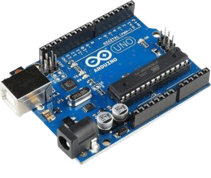
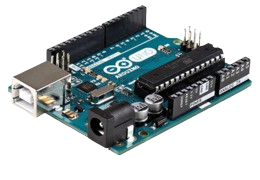
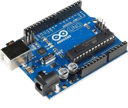
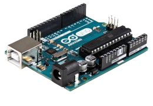

Conceito: O conceito da placa Arduino é oferecer uma plataforma acessível e versátil para prototipagem eletrônica, permitindo a conexão de sensores, atuadores e outros dispositivos para interação com o ambiente.
Dados Da Placa
Informações básicas
- Microcontrolador: A placa Arduino incorpora um microcontrolador que serve como o cérebro do sistema. Este microcontrolador é programável e executa instruções de acordo com o código carregado na placa.
- Portas de Entrada/Saída (I/O): As placas Arduino oferecem uma variedade de portas de entrada e saída, incluindo portas digitais e analógicas. Isso permite conectar sensores, atuadores e outros dispositivos eletrônicos para interagir com o ambiente. Facilidade de Conexão: A placa Arduino é projetada para ser facilmente conectada a outros dispositivos e componentes eletrônicos. Ela geralmente inclui conectores padrão, como pinos de entrada/saída, portas USB e interfaces de comunicação serial.
- Compatibilidade com Shields: As placas Arduino são compatíveis com módulos de expansão chamados de "shields", que se encaixam diretamente sobre a placa e oferecem funcionalidades adicionais, como conectividade Ethernet, Wi-Fi, GPS, entre outros
-
- Facilidade de Uso: Uma das principais características do Arduino é a sua facilidade de uso, mesmo para iniciantes em eletrônica e programação. Isso se deve em parte à sua comunidade ativa e aos vastos recursos educacionais disponíveis.
- Ampla Variedade de Placas: Existem várias placas Arduino disponíveis, desde as básicas, como o Arduino Uno, até versões mais avançadas, como o Arduino Mega e o Arduino Due. Cada placa tem suas próprias características e especificações únicas.
- Open Source: O Arduino é uma plataforma de código aberto, o que significa que todo o hardware e software relacionado são documentados e disponíveis para que os usuários possam estudar, modificar e distribuir livremente. Isso promove a inovação e a colaboração na comunidade Arduino.
Imagens
  
 